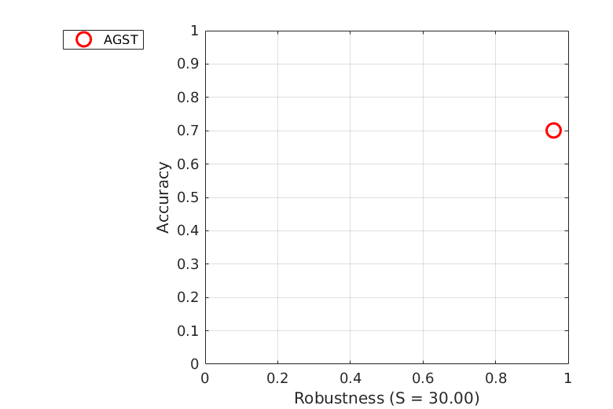
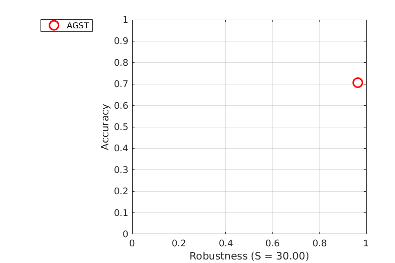
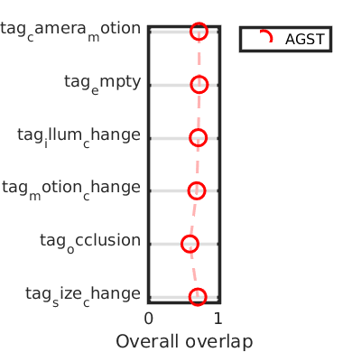
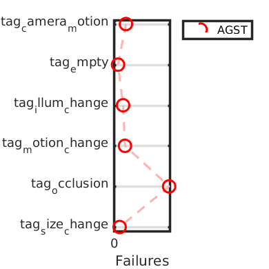
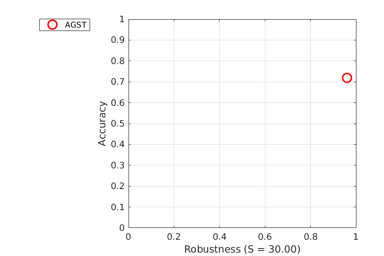
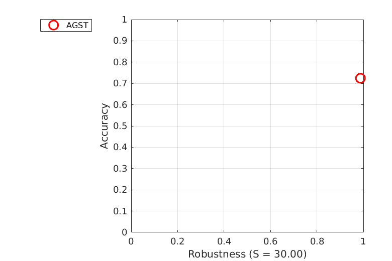
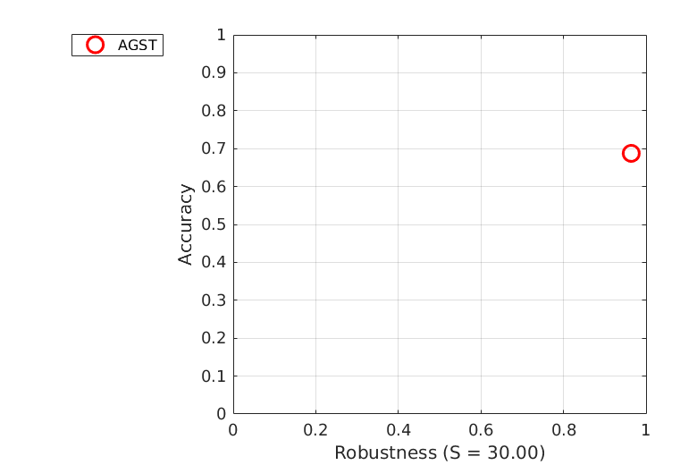
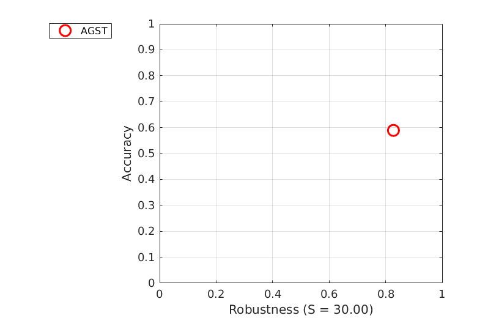

Accuracy-Robustness
Experiment baseline
AR plot for experiment baseline (mean)

AR plot for experiment baseline (weighted_mean)

AR plot for experiment baseline (pooled)
Accuracy
| | tag_camera_motion | tag_empty | tag_illum_change | tag_motion_change | tag_occlusion | tag_size_change | Mean | Weighted mean | Pooled |
|---|
| AGST | 0.7188 | 0.7244 | 0.7086 | 0.6875 | 0.5891 | 0.7020 | 0.6884 | 0.7008 | 0.7065 |
|---|
Robustness
| | tag_camera_motion | tag_empty | tag_illum_change | tag_motion_change | tag_occlusion | tag_size_change | Mean | Weighted mean | Pooled |
|---|
| AGST | 11.0000 | 3.0000 | 1.0000 | 6.0000 | 15.0000 | 3.0000 | 6.5000 | 6.7535 | 26.0000 |
|---|
Detailed plots

Orderings for overall overlap

Orderings for failures

AR plot for tag tag_camera_motion in experiment baseline

AR plot for tag tag_empty in experiment baseline
AR plot for tag tag_illum_change in experiment baseline

AR plot for tag tag_motion_change in experiment baseline

AR plot for tag tag_occlusion in experiment baseline
AR plot for tag tag_size_change in experiment baseline